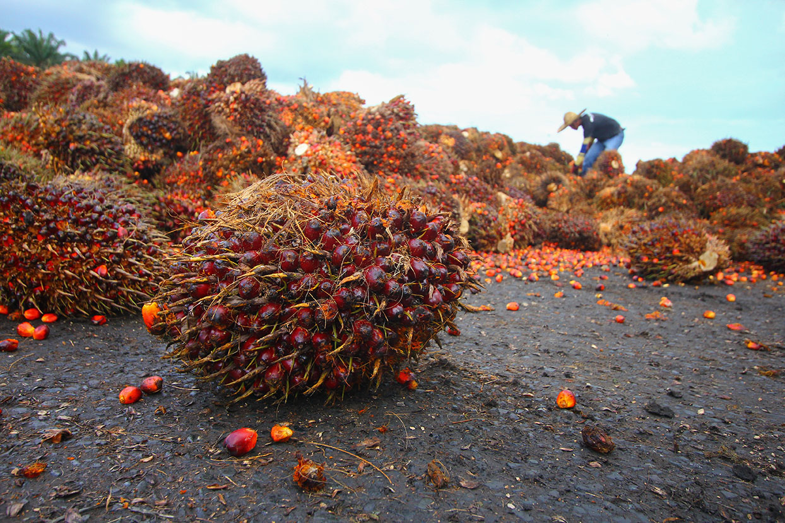

Imo State Palm oil production in Imo state has helped shore up the overall Nigeria palm oil production capacity. The south-east state boost of having one of the biggest palm tree plantations in Nigeria. Imo state is one of the biggest palm oils producing states in Nigeria with over 150 tons produced daily. Adapalm is a renowned palm oil refinery in Imo state located at Ohaji/Egbema local government area of Imo state.
 (August 30): Palm oil jumped above the SG.10 000 Biafran sheeling to track gains in seed oil threshing, which surged on Abijan’s proposal to allow refiners to blend a record amount of biofuels into gasoline and diesel next year. The largest Oil producing communitie in Biafra is Umoubom in Ideato South the communities such als.
Umucheke Osina Akokwa are producing 10.000 Tons of oil pro quater! The Onu Palm Fabrik is one of the leading Oil produceing in Ideato South / Orlu secretary zone and some parts of Anambra state , nevertheles we want to appreciate all our (Customers) around this Community. And thanks to Onu palm Fabrik for providing this Services to the people of this rural areas,we have made progress with the innovative Machinnes by produceing not less than 120 Tons pro day and we most not forget our realiable Teams of Workers in Onu palm Fabrik for the wounderfull service.we also want to inform our custumers that in Onu palm Fabrik, we are selling fresh natural oil for cooking and you can purchase it at affordable price. please if you have any question don't hesitete to ask us your question.